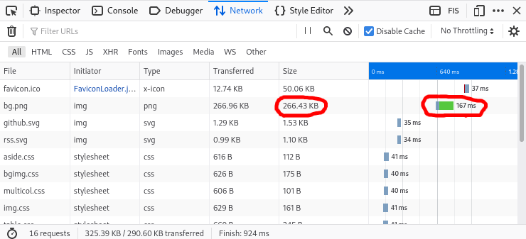

Image files will usually have the most impact on the speed of your websites (aside from Ad/tracker scripts). Learn to slim down your images using the ubiquitous ImageMagick to make your websites faster on slow internet connections.
For the examples, I decided to use this public domain image.
{kind=link}
There are many ways to decrease image size using
ImageMagick, the simplest is to use the
-quality option, which will compress the
image without changing the resolution. This option
takes the value you want to compress by (between 1 and
100, the lower the value, the lower the file size). For
example:
convert in.jpg -quality 50 out.jpgCompressing the example image above results in the following file size changes:
| Quality | Size |
|---|---|
| Original | 2.1M |
| 90 | 1.7M |
| 80 | 844K |
| 70 | 588K |
| 60 | 448K |
| 50 | 368K |
| 40 | 308K |
| 30 | 248K |
| 20 | 184K |
| 10 | 116K |
Due to the images high resolution, it is usable in this website even when highly compressed (30% quality, still looks decent in my opinion).
Contribution
- Musse
- Monero:
83is3y69Xv4fkFsTpZhw5c3bfxtimupfgTdpERHM1WtMNAwSqFjTCJm3VabyBKXKnL873dWPmqj4bRcgkm9oCktgQrzmhHd